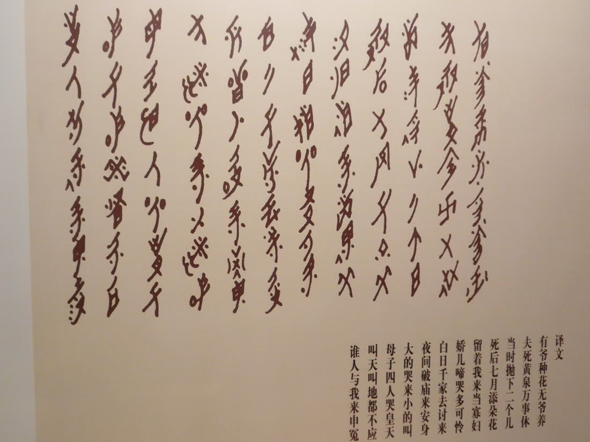
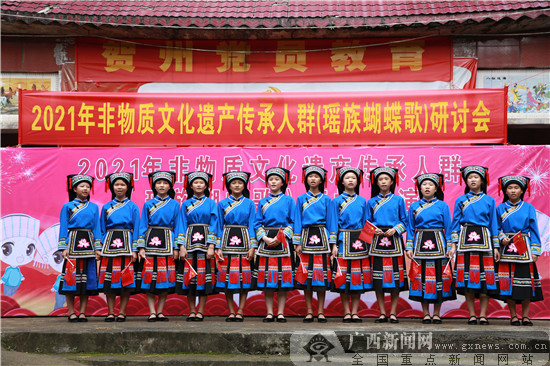
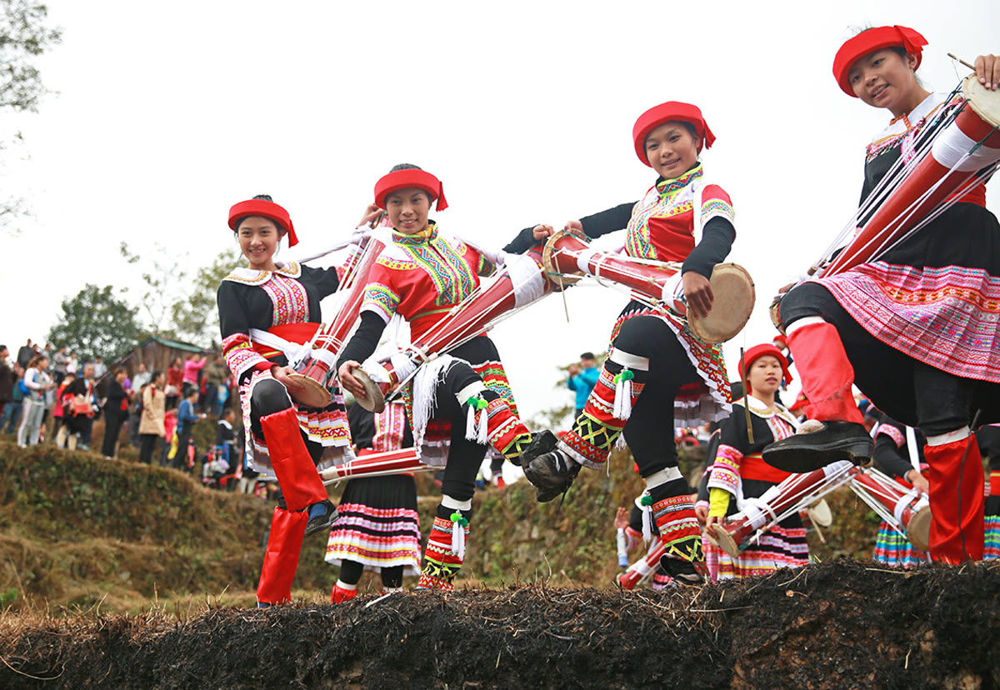
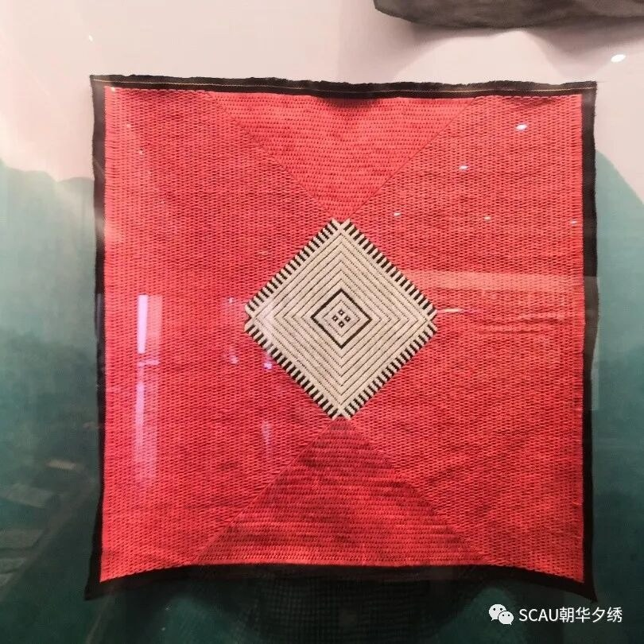
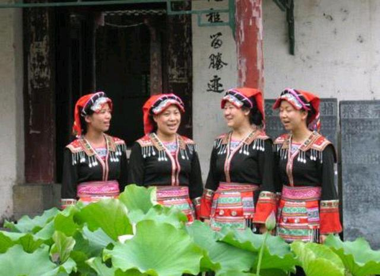

XIAOHE ANCIENT ROAD · AUDIO HERITAGE DATABASE
潇贺古道
秦建新道 · 楚粤通衢·北起潇水，南抵贺江 · 陆路约 170 公里
序PROLOGUE秦代「新道」
北起潇水，南抵贺江。 翻越萌渚岭，一百七十公里。 把长江与珠江连在一起。
「交融古今，通达天下」—— 周大鸣，光明日报 2022-04-20
一条路，两种水系，
还有仍在传唱的声音。
约 170 KM 陆路 / 30+ 村寨东路萌渚岭道 · 西路谢沐关道秦「新道」· 海陆丝绸之路陆水联运节点
CHAPTER 01 / 06国家级非物质文化遗产 · 2006 第一批25.27°N · 111.34°E
壹NÜSHU / A SCRIPT OF HER OWN
女书
A SCRIPT OF HER OWN江永女书 · 目前已知唯一由女性专用的文字
女书笔画纤细、右斜，字形呈长菱形。江永的女性用它写信、记姊妹往来，写在纸扇、手帕和三朝书上。目前已知唯一由女性专用的文字。

- 属地 / Region
- 湖南 · 江永
- 名录 / Heritage
- 2006 第一批国家级非遗
- 声音 / Sound
- 读唱 · 坐歌堂
CHAPTER 02 / 06国家级非物质文化遗产 · 2008 第二批24.82°N · 111.27°E

贰BUTTERFLY SONG / TWO VOICES
蝴蝶歌
TWO VOICES, ONE BREATH富川瑶家 · 二声部民歌
衬词「蝴的蝶」贯穿全曲，两个声部同起同收。富川瑶族在节庆、歌会与劳作时演唱，唱爱情，也唱劳作。
- 属地 / Region
- 广西 · 富川
- 名录 / Heritage
- 2008 第二批国家级非遗
- 声音 / Sound
- 二声部 · 同起同收
CHAPTER 03 / 06国家级非物质文化遗产 · 2008 第二批25.18°N · 111.55°E
叁LONG DRUM DANCE / THE DRUM REMEMBERS
长鼓舞
THE DRUM REMEMBERS瑶语「郭咚郭」· 湖南江华 / 广东连南 / 广西富川
舞者挎长鼓，边击鼓边舞蹈。动作有开荒、伐木、建房等，江华、金秀、富川各有分支。

- 属地 / Region
- 江华 · 连南 · 富川
- 名录 / Heritage
- 2008 第二批国家级非遗
- 声音 / Sound
- 鼓点 · 号子
CHAPTER 04 / 06全国重点文物保护单位 · 2013 第七批24.90°N · 111.20°E
肆A BRIDGE THAT SHELTERS
风雨桥
A BRIDGE THAT SHELTERS27 座 · 石拱 / 石梁 / 木梁
回澜桥为三孔石拱，桥上建廊，廊间起亭，亭上叠阁楼。桥廊两侧设坐凳，供行人避雨歇脚。
- 属地 / Region
- 广西 · 富川
- 名录 / Heritage
- 2013 第七批全国重点文保
- 声音 / Sound
- 水声 · 风穿廊
CHAPTER 05 / 06国家级非物质文化遗产 · 2014 第四批25.18°N · 111.55°E
伍PANWANG SONG / A VOW RETURNED
盘王大歌
A VOW RETURNED还盘王愿 · 八千行 · 七任曲
《盘王大歌》约八千行，分序歌、插歌、正歌、杂歌，有七支曲牌。盘王节「还盘王愿」时，师公与歌娘男女对唱。

- 属地 / Region
- 湖南 · 江华
- 名录 / Heritage
- 2014 第四批国家级非遗
- 声音 / Sound
- 吟唱 · 七任曲
CHAPTER 06 / 06广西自治区级非物质文化遗产 · 201824.82°N · 111.27°E

陆FUCHUAN YAO BROCADE / WEAVE & DYE
织锦
FUCHUAN YAO BROCADE平地瑶 · 植物染色 · 经纬显花
富川平地瑶的织锦以植物染色的经纬线织出菱形、折线与花带，用在被面、枕头、头帕与服饰上。2018 年列入广西自治区级非遗。据《消费日报》报道，这项技艺已有 1000 余年历史。
- 属地 / Region
- 广西 · 富川
- 名录 / Heritage
- 2018 自治区级非遗
- 声音 / Sound
- 织机 · 投梭
目录 / CONTENTS
六章
潇贺古道沿线的六项文化遗产。悬停或点按任意一题，展开这一题的短说明与专题页入口。
悬停展开 · 点按进入 →
07 / EPILOGUE
听见古道
古道沿线，女书、蝴蝶歌、长鼓舞、风雨桥、盘王大歌与富川织锦各有自己的声音与手艺。
数据库收录可核对的条目、录音与影像，供查阅与引用。